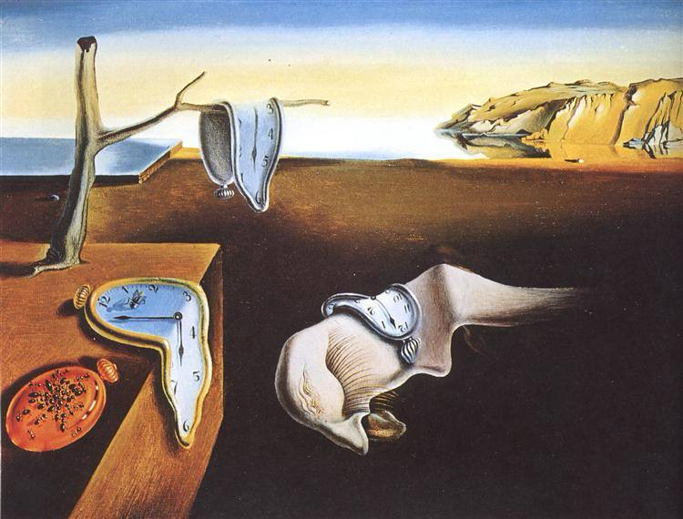
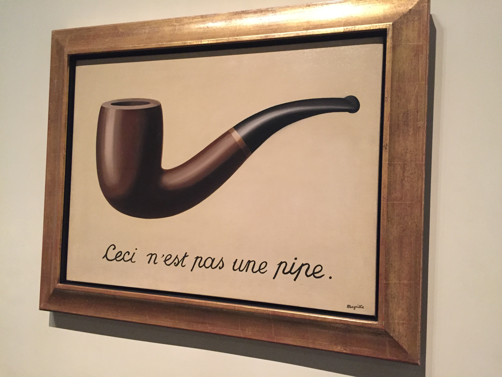
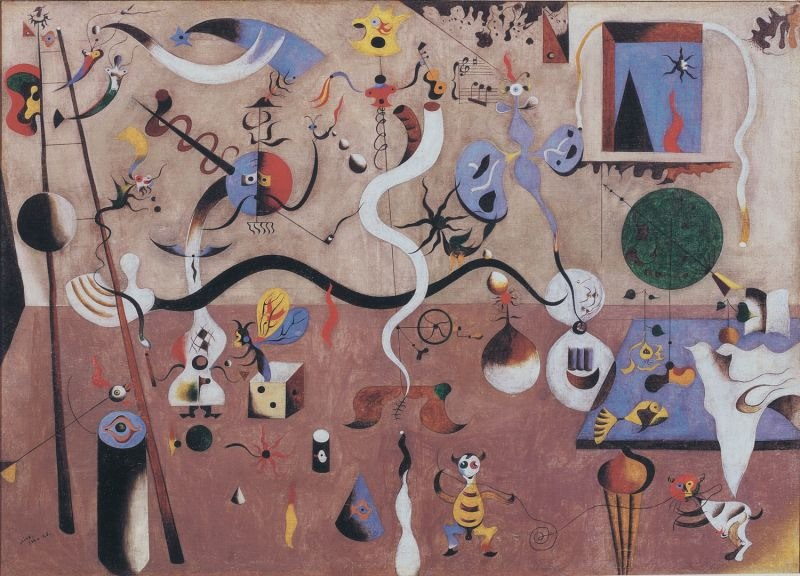
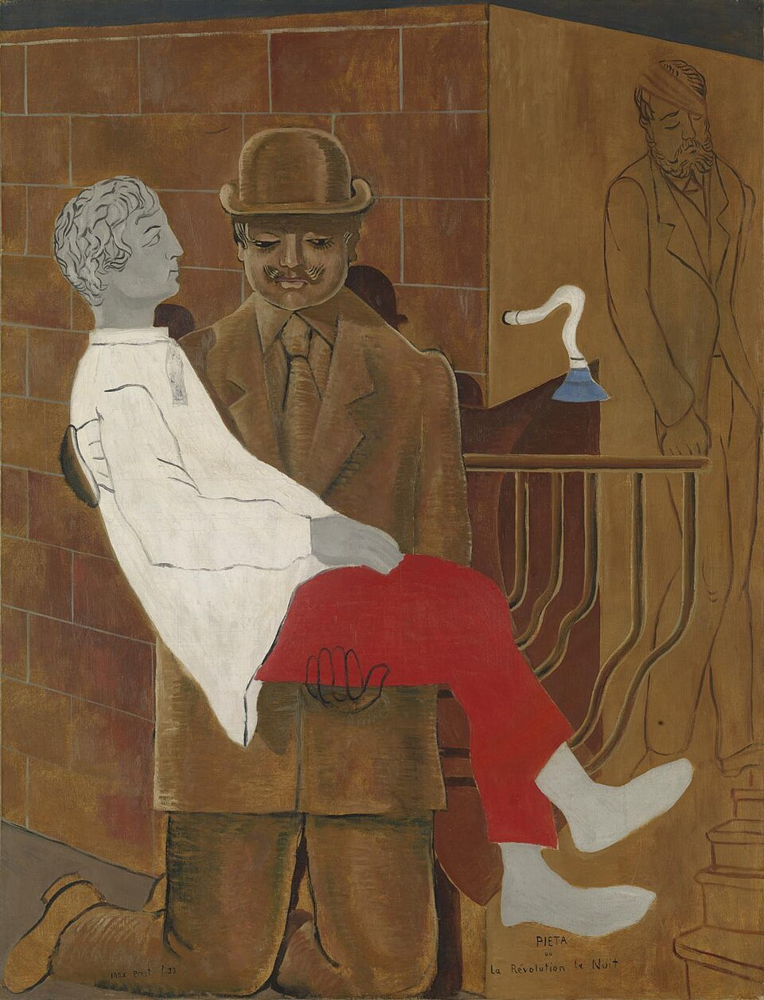
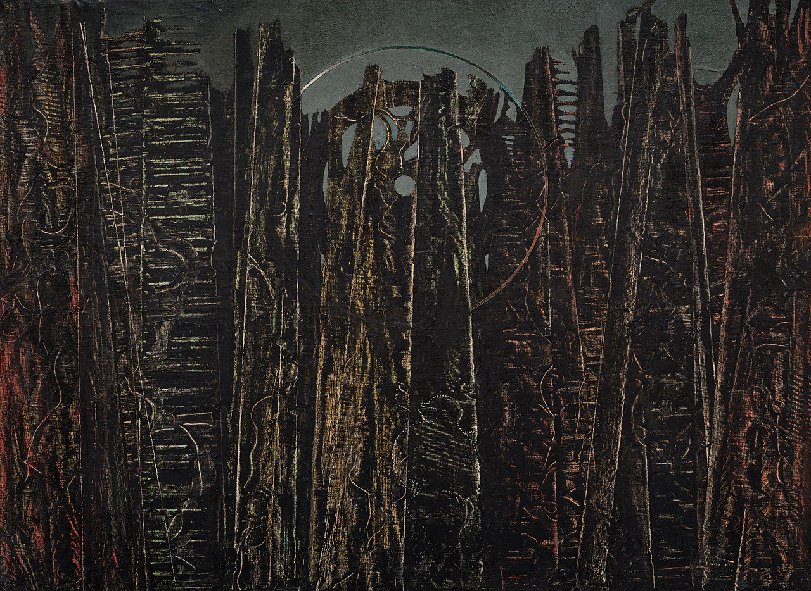
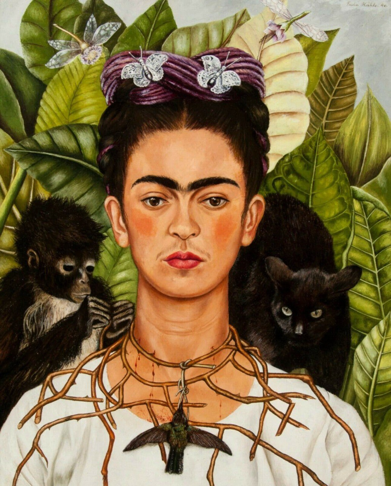
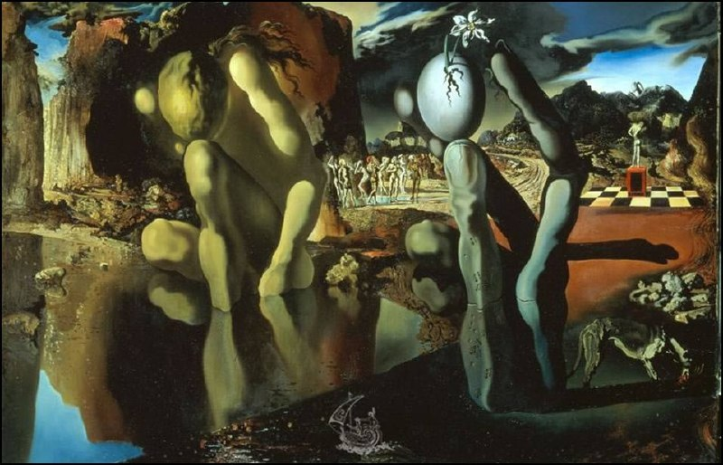
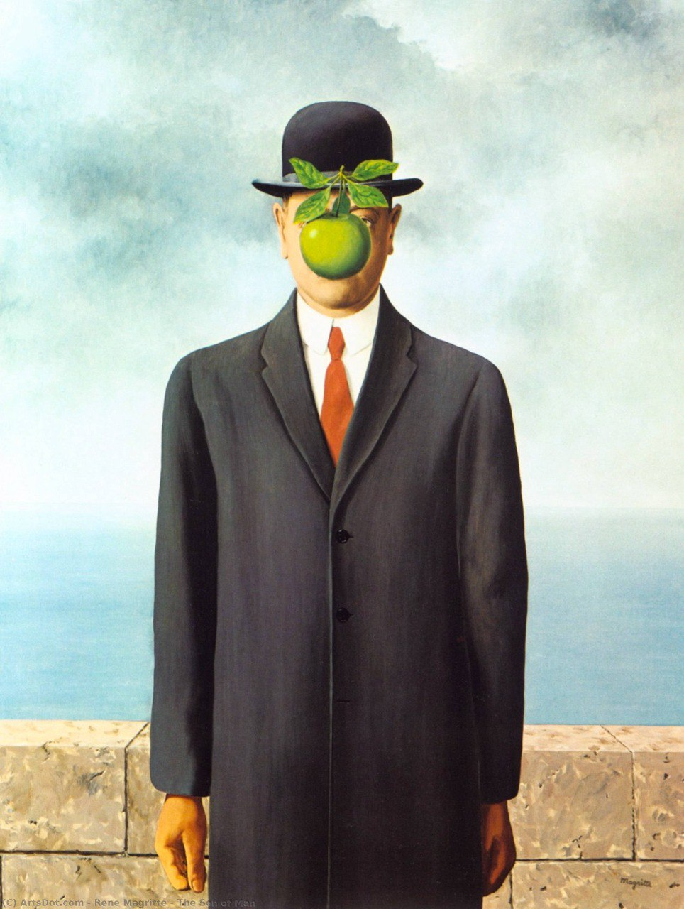
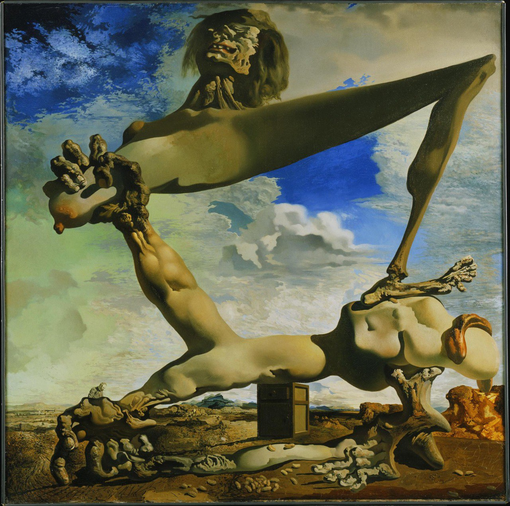
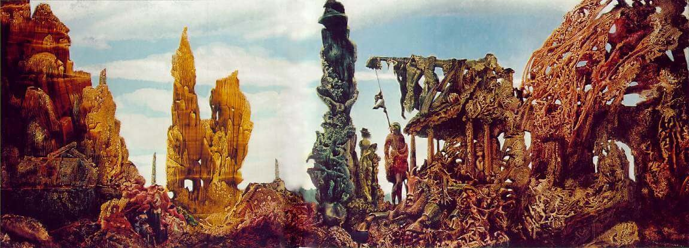

Meesterwerk: Permanentie van de herinnering
Salvador Dalí, 1931

⚜️ UITGEBREIDE STIJLFIGUREN
🎨 DROOMLOGICA
Realistisch + Onmogelijk: Objecten worden hyper-realistisch geschilderd, maar geplaatst in onmogelijke combinaties en situaties. De techniek is klassiek, de inhoud is gek.
Verstoorde schaal: Gigantische objecten naast minuscule figuren. Proporties die veranderen binnen één werk.
🔗 Tijdsgeest Connecties
Psychologie: Freud's droomanalyse - de "koninklijke weg naar het onderbewuste"
Politiek: Weigering van burgerlijke rationaliteit - kunst als subversie
Filosofie: Het onbewuste als bron van hogere waarheid boven de ratio
Historie: WOI trauma maakt "beschaafde" rationaliteit ongeloofwaardig
🧠 HET ONDERBEWUSTE
Automatisch schrijven/schilderen: Het onderbewuste mag direct naar het doek, zonder censuur van de ratio. Dit leidt tot vreemde associaties en onverwachte beelden.
Freudiaanse invloed: Dromen, verdrongen verlangens, seksualiteit, angsten - alles mag op tafel.
🔗 Tijdsgeest Connecties
Psychologie: Freud's "Die Traumdeutung" (1900) - verdringing, driften, het id
Politiek: Bevrijding van seksuele moraal - anti-bourgeois revolutie
Filosofie: Nietzsche's Dionysische vs Apollinische - driften boven ratio
Historie: WOI toont dat "beschaving" een dun laagje is over primitive driften
✨ HYPER-REALISME
Academische precisie: In tegenstelling tot het losse Expressionisme, is Surrealisme vaak extreem gedetailleerd. Elk haar, elke schaduw klopt.
Illusie van werkelijkheid: De kijker wordt verleid om het beeld te geloven, waardoor de onmogelijkheid des te harder aankomt.
🔗 Tijdsgeest Connecties
Psychologie: Het "uncanny" (unheimlich) - het vertrouwde dat vreemd wordt
Politiek: Ondermijning van officiële waarheden door subversieve realiteit
Filosofie: Plato's schaduw op de grotwand - wat is echte werkelijkheid?
Historie: Fotografie maakt realisme overbodig - kunst moet fotografie overtreffen
🔮 SYMBOLISME
Persoonlijke iconografie: Elke kunstenaar ontwikkelt eigen symbolen. Dalí heeft zijn smeltende klokken, Ernst zijn vogel-mens, Kahlo haar wenkbrauwen.
Mythen en archetypen: Narcissus, Oedipus, engelen en demonen - klassieke verhalen krijgen nieuwe betekenis.
🔗 Tijdsgeest Connecties
Psychologie: Jung's archetypen - collectief onderbewuste als bron van symbolen
Politiek: Mythen als subversieve tegenhanger van officiële geschiedenis
Filosofie: Symbolisme als toegang tot hogere, niet-rationele kennis
Historie: WOI vernietigt vertrouwen in vooruitgang - terug naar eeuwige mythen
🎨 TIEN MEESTERWERKEN - GEDETAILLEERDE ANALYSE
1. "Permanentie van de herinnering" (1931) — Salvador Dalí
MoMA, New York · 24 × 33 cm · Olieverf op doek
Achtergrond: Een van Dalí's meest bekende werken, geschilderd in slechts enkele uren. Het landschap is geïnspireerd op de rotsen van Cap de Creus in Catalonië. Dalí noemde het "handgeschilderde droomfoto's".
🔍 STIJLANALYSE
Hyper-realistische techniek: Elk detail is perfect - de schaduwen, de textuur van de rotsen, de reflecties. Dalí gebruikt oude meestertechnieken (glaceren, onderverven) voor een hallucinatoir effect.
Smeltende tijd: De klokken zijn zacht, vloeibaar, als kaas. Dit is geen mechanische tijd maar psychologische tijd - hoe tijd voelt in een droom of bij verveling. Einstein's relativiteitstheorie als poëtisch beeld.
Verstoorde schaal: Het landschap is oneindig, leeg. Het enige menselijke element is het bizarre, antropomorfe figuur in het midden - slapend? dood? dromend?
Symboliek: De hardheid van de rotsen versus de zachtheid van de klokken. Tijd verliest zijn rigide structuur in het onderbewuste. De vliegen suggereren verval.
Dalí's methode: Paranoïaque-kritieke methode - bewustzijn verdubbelen om hallucinaties te produceren. Dalí zocht naar "handgeschilderde droomfoto's".
2. "De Verraad der Beelden" (1929) — René Magritte
LACMA, Los Angeles · 63 × 94 cm · Olieverf op doek

Achtergrond: Waarschijnlijk het meest besproken Surrealistische werk. De tekst "Ceci n'est pas une pipe" (Dit is geen pijp) lijkt absurd, maar is logisch: het is een schilderij van een pijp, geen pijp zelf.
🔍 STIJLANALYSE
Taal vs. Beeld: Magritte onderzoekt de relatie tussen representatie en realiteit. De pijp lijkt echt, maar de tekst ontkent dit. Waarheid is een constructie.
Minimalisme: Geen decor, geen context, geen diepte. Witte achtergrond, alleen de pijp en de tekst. Dit maakt de paradox scherper - er is niets om afleiding te bieden.
Techniek: Zeer glad, reclame-achtig. Magritte werkte korte tijd als reclametekenaar en die invloed is zichtbaar. Het is bijna illustratief, niet "artistiek".
Filosofische implicaties: Dit werk is een voorloper van de taalfilosofie van Wittgenstein en de deconstructie van Derrida. Een beeld is nooit "gewoon" een beeld.
Versus Dalí: Waar Dalí dromen schildert, schildert Magritte filosofie. Beiden zijn Surrealisten, maar met totaal verschillende benaderingen.
3. "Harlequin's Carnival" (1924-1925) — Joan Miró
Albright-Knox Art Gallery, Buffalo · 66 × 93 cm · Olieverf op doek

Achtergrond: Miró's doorbraak naar zijn kenmerkende stijl. De titel verwijst naar het carnaval in Barcelona, maar ook naar de Commedia dell'arte figuur Harlekijn. Het werk is een explosie van vreugde en absurditeit.
🔍 STIJLANALYSE
Automatisme: Miró begon met vlekken en lijnen, zonder plan. De vormen "werden" figuren tijdens het proces. Dit is pure Surrealistische methode - het onderbewuste bepaalt.
Biomorfische vormen: Organische, levende vormen die niet menselijk maar wel levend lijken. Spermacellen, micro-organismen, embryo's - het leven op cellulair niveau.
Kleur: Primaire kleuren (rood, blauw, geel) en zwart. Kinderlijk, speels, bijna kindertekening-achtig. Maar de compositie is volwassen en doordacht.
Symbolen: De ladder (ascensie), de cijfers (tijd), de dierlijke oren (instinct). Miró creëert een persoonlijk alfabet van tekens.
Ruimte: Geen diepte, geen perspectief. Alles zweeft in een indefinieerbare ruimte - zoals in een droom waar zwaartekracht niet bestaat.
4. "Pietà of Revolutie bij Nacht" (1923) — Max Ernst
Tate Modern, Londen · 116 × 89 cm · Olieverf op doek

Achtergrond: Geschilderd kort na de Duitse Revolutie van 1918-1919. De titel verwijst naar de katholieke pieta (Maria met dode Christus), maar hier is het een vaderfiguur met een zoon. Ernst's relatie met zijn eigen vader was problematisch.
🔍 STIJLANALYSE
Frottage: Ernst's uitvinding - wrijven met potlood over textuur (hout, stof, etc.) om patronen te creëren. De vloer is zo gemaakt. Dit brengt het toeval binnen - het onderbewuste kiest.
Oedipale thematiek: De grote, angstaanjagende vaderfiguur. De zoon die wordt vastgehouden of geknield wordt gedwongen. Freud's Oedipus-complex als visueel drama.
Kleuren: Donker, somber. Bruin, grijs, groen - de kleuren van angst en onderdrukking. Alleen het rode gordijn biedt een vlek van passie/geweld.
Architectuur: De kamer is een gevangenis. Deuren die nergens heen leiden. Ernst's obsessie met gesloten ruimtes en nachtmerries.
5. "Het Grote Bos" (1927) — Max Ernst
Kunstsammlung Nordrhein-Westfalen, Düsseldorf · 114 × 146 cm · Olieverf op doek

Achtergrond: Ernst's "bos" werken zijn onderdeel van een reeks waarin de natuur dreigend en mystiek wordt. Het bos is niet romantisch (zoals bij de Romantici) maar angstaanjagend - een plek van verdwalen en verlies.
🔍 STIJLANALYSE
Decalcomanie: Verf opplakken en afdrukken - het omgekeerde van schilderen. Dit creëert organische, onvoorspelbare patronen die op bomen lijken.
Verstoorde schaal: De bomen zijn enorm, de mensen minuscuul. De natuur overweldigt de mens. Dit is Romantiek omgedraaid: de natuur is niet verheven maar bedreigend.
Licht: Diffuus, maanachtig. Er is geen zon, geen warmte. Het bos leeft in een eeuwige schemering. Ernst's nachtmerrie-esthetiek.
Mythisch: Het bos als archetypische plek van dreiging (sprookjes, Germaanse mythologie). Ernst haalt uit de collectieve onbewuste.
6. "Zelfportret met Doornenketting en Kolibrie" (1940) — Frida Kahlo
Harry Ransom Center, Austin · 63 × 49 cm · Olieverf op doek

Achtergrond: Geschilderd na haar scheiding van Diego Rivera. De doornenketting verwijst naar de kroon van doornen, maar ook aan haar pijn na de ontrouw van Diego. De kolibrie is een Mexicaans symbool van liefde en hoop.
🔍 STIJLANALYSE
Naïef realisme: Kahlo's stijl is beïnvloed door Mexicaanse volkskunst (retablos). Geen perspectief, vlakke kleuren, directe blik. Maar het is doordacht naïef - elk element is symbool.
Symboliek: De doornenketting die bloedt (zelfopofferend liefdesverdriet), de aap (listigheid, ook deeltje van de ziel in Mexicaanse folklore), de kolibrie (onmogelijke liefde), de zwarte kat (onheil).
Kleur: Levendig groen (jungle, groei), fel rood (bloed, passie), geel (zon, leven). Kahlo's palet is Mexicaans - verwant aan haar identiteit.
Wenkbrauwen: Kahlo's handelsmerk - samengegroeid tot één lijn. Symbool van haar weigering om Europese schoonheidsidealen te volgen. Ze is trots op haar "mannelijke" kenmerken.
Surrealisme?: Kahlo weigerde het label "Surrealiste". Zij zei: "Ik schilder mijn realiteit, niet mijn dromen." Haar leven was surrealistisch genoeg.
7. "De Metamorfose van Narcissus" (1937) — Salvador Dalí
Tate Modern, Londen · 51 × 78 cm · Olieverf op doek

Achtergrond: Dalí's interpretatie van de Griekse mythe. Narcissus verliefd op zijn eigen spiegelbeeld, verandert in een narcis (bloem). Dalí voegt dubbele beelden toe - het verhaal wordt visueel raadsel.
🔍 STIJLANALYSE
Dubbelbeeld: Links de knielende Narcissus, rechts de hand die een ei vasthoudt (nieuw leven, transformatie). Twee momenten in één beeld - tijd is opgeheven.
Hand met ei: Typisch Dalíaans symbool - het ei als perfecte vorm, geboorte, potentie. De vingers lijken op de kliffen op de achtergrond - alles is vervormd.
Landschap: Het Catalaanse landschap (Cap de Creus) met surrealistische toevoegingen. Het water is spiegelglad - Narcissus kan zich blijven bewonderen.
Techniek: Glad, bijna emaille-achtig. Dalí noemde dit zijn "paranoïaque-kritieke methode" - systematische verwarring creëren.
8. "De Zoon van de Mens" (1964) — René Magritte
Privécollectie · 116 × 89 cm · Olieverf op doek

Achtergrond: Een van Magritte's laatste werken, en een van zijn bekendste. De man in het bolhoedje is Magritte zelf (hij droeg vaak een bolhoed). De appel verwijst naar het paradijs, maar ook naar het verbergen van het gezicht.
🔍 STIJLANALYSE
Verborgen identiteit: Het gezicht is onzichtbaar achter de appel. Wie is de man? Magritte? Iedereen? De appel (tentatie, kennis) verhindert dat we de persoon zien.
De zee: Achter de man is een muur, daarachter de zee. Het is een typisch Magritte-scène: onmogelijke architectuur, geen logische diepte.
Stijl: Hard-edge, glad, reclame-achtig. Geen penseelstreken zichtbaar. Magritte wil dat het beeld "neutraal" is - de inhoud moet schokken, niet de stijl.
Christelijke verwijzing: "De Zoon van de Mens" is een titel die Jezus voor zichzelf gebruikte. Is dit een moderne christus? Of een ironische commentaar?
9. "Zachte Constructie met Gekookte Bonen" (1936) — Salvador Dalí
Philadelphia Museum of Art · 100 × 99 cm · Olieverf op doek

Achtergrond: Geschilderd tijdens de Spaanse Burgeroorlog. Het lichaam dat zichzelf verscheurt is een allegorie van Spanje dat zichzelf vernietigt. De titel verwijst naar "premonitie" - Dalí voorspelde de oorlog.
🔍 STIJLANALYSE
Vlezige horror: Het lichaam is zacht, vloeibaar, als gesmolten kaas. Ledematen worden uit elkaar getrokken, maar het is geen bloed - het is vlees dat zichzelf verslindt.
Bonenthema: De bonen verwijzen naar het Spaanse volksreferendum. Dalí zag de politieke chaos als een monster dat zichzelf opeet.
Landschap: Verlaten, troosteloos. De klassieke Dalí-elementen: rotsen, wolken, verstoorde schaal. De natuur getuigt van de menselijke waanzin.
Politieke kunst: Zeldzaam voor Dalí, die meestal apolitiek was. De oorlog in zijn vaderland trof hem diep - ook al bleef hij neutraler dan veel andere kunstenaars.
10. "Europe After the Rain II" (1940-1942) — Max Ernst
Wadsworth Atheneum, Hartford, Connecticut · 54 × 146 cm · Olieverf op doek

Achtergrond: Gemaakt tijdens Ernst's ballingschap in Amerika, vluchtend voor de nazi's. Het werk verbeeldt een post-apocalyptisch Europa na de oorlog - verwoest, maar met sporen van wedergeboorte. De titel verwijst naar de regen die de wereld schoonspoelt.
🔍 STIJLANALYSE
Decalcomania: Ernst gebruikte deze techniek waarbij verf tussen twee oppervlakken wordt geperst en dan gescheiden. Dit creëert organische, grotachtige texturen die het landschap vormen.
Post-apocalyptisch: Een verwoest landschap met surreële structuren, alsof de beschaving is weggevaagd en iets nieuws ontstaat. De regen heeft alles getransformeerd.
Kleur: Aardetinten, groen, bruin, oker - alsof de natuur de ruïnes van Europa terugclaimt. Het is melancholisch maar niet hopeloos.
Ballingschap: Ernst maakte dit werk als vluchteling in Amerika, terugkijkend naar een Europa in vlammen. Het is tegelijk een elegie en een visioen van vernieuwing.
📚 TIJDSGEEST CONTEXT (1924-1966)
🌍 POLITIEK PERSPECTIEF
Het Surrealisme (1924-1966) ontwikkelde zich in een politieke context die werd gekenmerkt door de nasleep van de Eerste Wereldoorlog, de opkomst van het fascisme, de Grote Depressie en de Tweede Wereldoorlog. De politieke structuur werd gedomineerd door de strijd tussen democratie, fascisme en communisme, met de Spaanse Burgeroorlog (1936-1939) als het cruciale conflict dat de Europese intellectuelen polariseerde. Het Surrealisme, onder leiding van André Breton, positioneerde zich expliciet als een revolutionaire beweging die niet slechts de kunst wilde transformeren, maar de gehele menselijke ervaring. Breton verklaarde dat het ware doel van het Surrealisme was: "Leve de sociale revolutie, en zij alleen!" De beweging ontwikkelde nauwe banden met het communisme, hoewel deze relatie complex en gespannen bleef.
De sociale dynamiek werd gekenmerkt door een revolte tegen de bourgeois samenleving, haar rationaliteit, haar moraliteit en haar onderdrukking van het onderbewuste. De surrealisten, beïnvloed door de psychoanalyse van Sigmund Freud, zochten toegang tot het onbewuste door middel van automatische schrijving, droomanalyse en de verheerlijking van het irrationele. Zij geloofden dat de bevrijding van het individu van de ketenen van de rede en de maatschappelijke conventies zou leiden tot een revolutie die de gehele samenleving zou transformeren. Tegelijkertijd waren velen van hen politiek actief: zij steunden de Russische Revolutie, zij vochten in de Spaanse Burgeroorlog aan de zijde van de republikeinen, zij protesteerden tegen het kolonialisme en het racisme. De surrealisten ontwikkelden wat later "zwart surrealisme" zou worden genoemd, met name door hun contact met Aimé Césaire en andere intellectuelen uit Martinique.
De politieke geschiedenis van het Surrealisme werd gekenmerkt door scheuringen en conflicten. In 1929 brak Breton met verschillende leden van de groep die weigerden zich te committeren aan collectieve actie. In 1933 werden Breton, Éluard en Crevel uit de Franse Communistische Partij gezet omdat zij stelden dat een "proletarische literatuur" in een kapitalistische samenleving onmogelijk was. Salvador Dalí, een van de meest bekende surrealisten, werd in 1939 uit de groep gezet omdat hij het fascisme en het kapitalisme steunde. Tijdens de Tweede Wereldoorlog vluchtten vele surrealisten naar de Verenigde Staten, waar zij invloed uitoefenden op de ontwikkeling van het Abstract Expressionisme. Na de oorlog, in 1952, omarmde Breton expliciet het anarchisme en verklaarde: "In de zwarte spiegel van het anarchisme herkende het surrealisme zichzelf voor het eerst."
De verbinding tussen politiek en artistieke stijl was fundamenteel en intentioneel. Het Surrealisme's technieken - automatische schrijving, droombeelden, ongerijmde juxtaposities, het "omschrijven van het onbewuste" - waren niet slechts artistieke methodes, maar strategieën om de hegemonie van de rede en de bourgeois cultuur te ondermijnen. De schilderijen van Magritte, Dalí, Ernst, Miró en andere surrealisten, met hun ongerijmde combinaties van alledaagse objecten, hun droomachtige landschappen, hun verontrustende symboliek, waren visuele manifestaties van een wereld die niet werd beheerst door rede, maar door het onderbewuste, het irrationele, het onbekende. Breton stelde dat het doel van het Surrealisme was "de vroeger tegenstrijdige condities van droom en realiteit op te lossen in een absolute realiteit, een super-realiteit" - een surreality die de mens zou bevrijden van de onderdrukking van de rede en de maatschappij. Het Surrealisme was daarmee niet slechts een artistieke beweging, maar een filosofische en politieke revolutie die de basis legde voor latere kritische theorie, antikolonialisme en postmodernisme.
Bronnen: Wikipedia - Surrealism, André Breton, Salvador Dalí, Max Ernst, René Magritte, Surrealist Manifesto, Spanish Civil War, Communism.
📖 LITERAIR PERSPECTIEF
Het surrealisme, formeel gelanceerd door André Breton's 'Manifeste du surréalisme' (1924), was de meest invloedrijke avant-gardebeweging van de 20e eeuw op het gebied van de literatuur. Breton, die als medicus had kennisgemaakt met de theorieën van Freud, zocht een manier om het onbewuste in de kunst te betrekken. Het surrealisme streefde naar een 'oplossing van de fundamentele contradicties van het leven' door droom en werkelijkheid te verenigen tot een absolute realiteit: de surréalité. In de literatuur vertaalde dit zich in automatische schrijving (écriture automatique)—een techniek waarbij de schrijver zijn bewuste controle losliet en de pen over het papier liet gaan zonder censuur of planning. Breton en Philippe Soupault's 'Les Champs magnétiques' (1920) was het eerste surrealistische werk dat van deze techniek gebruik maakte. De teksten die hieruit ontstonden waren fragmentarisch, associatief, en rijk aan onverwachte beelden die aan het bewustzijn ontsnapten. De surrealisten ontdekten in de automatische schrijving een methode om het onbewuste rechtstreeks te woord te laten. Naast automatische schrijving ontwikkelden de surrealisten andere technieken om het rationele denken te ontwrichten. De 'cadavre exquis' (exquisite lijk)—een samenspel waarbij meerdere deelnemers elk een deel van een zin of tekening toevoegden zonder het geheel te zien—was een collectieve toevalsmethode die verrassende poëtische combinaties opleverde. De dialoog met de slaap, de droom, de waanzin en de drugservaring werd onderdeel van de literaire praktijk. Tot de belangrijkste surrealistische schrijvers behoren Paul Éluard, Louis Aragon, René Char en Benjamin Péret. Éluard's poëzie, met titels als 'Capitale de la douleur' (1926), verkende de grenzen van liefde, verlangen en verlies in een beeldentaal die de logica ontweek. Aragon's 'Le Paysan de Paris' (1926) was een hybride werk dat reisverslag, gedicht en manifest in zich verenigde. Het surrealisme had een sterke politieke dimensie. Veel surrealisten, waaronder Breton, sloten zich aan bij de Communistische Partij, hoewel de relatie tussen surrealisme en communisme vaak gespannen bleef. De surrealisten zagen hun beweging als een revolutie van de geest, een bevrijding van de mens uit de ketenen van het rationalisme en het bourgeois conformisme. De beweging oefende een enorme invloed uit op de wereldliteratuur. In het Spaans ontwikkelde zich een rijke surrealistische traditie met dichters als Federico García Lorca, Vicente Aleixandre en Pablo Neruda. Lorca's 'Poeta en Nueva York' is een surrealistisch meesterwerk dat de desoriëntatie van de moderne metropool vangt. In het Engels beïnvloedde het surrealisme dichters als Wallace Stevens en Charles Simic. De erfenis van het surrealisme reikt tot in de hedendaagse poëzie en proza, waar technieken als automatische schrijving en de verwerking van droommateriaal gemeengoed zijn geworden. Het surrealisme toonde dat de literatuur het vermogen heeft om toegang te krijgen tot verborgen lagen van de menselijke geest. De beweging inspireerde ook de ontwikkeling van de magisch realistische literatuur, waarbij het fantastische naast het alledaagse wordt geplaatst. Schrijvers als Alejo Carpentier en Gabriel García Márquez bouwden voort op surrealistische inzichten, maar zochten hun bronnen in de Latijns-Amerikaanse werkelijkheid. Het surrealisme bleef een levende traditie die zich voortdurend vernieuwde en aanpaste aan nieuwe contexten.
🧠 PSYCHOLOGISCH PERSPECTIEF
Het surrealisme ontwikkelde zich uit het dadaïsme maar ging verder door actief te zoeken naar manieren om het onderbewustzijn en de droomwereld toegankelijk te maken voor de kunst. Diep beïnvloed door de psychoanalytische theorieën van Freud, probeerden de surrealisten de rationele controle van het bewustzijn te omzeilen en toegang te krijgen tot de diepere lagen van de psyche. Het mensbeeld in het surrealisme wordt gekenmerkt door een fundamentele tweedeling tussen het rationele, sociale zelf en het ongerepte, verlangende onbewuste. Het individu wordt gezien als een slagveld waarop bewuste en onbewuste krachten strijden om dominantie. Kunstenaars zoals Dalí, Magritte en Ernst beeldden deze interne conflicten uit door middel van droomachtige scènes, onmogelijke combinaties en verontrustende transformaties. De dominante emoties in het surrealisme zijn verlangen, angst, verwondering en een gevoel van het onbekende dat vlak onder de oppervlakte van het alledaagse schuilt. Er is een constante spanning tussen aantrekking en afstoting, tussen fascinatie en horror, die de kijker in een toestand van psychische onzekerheid brengt. De psychische toestand die het surrealisme nastreeft is er een van verhoogde gevoeligheid voor de werking van het onbewuste. Technieken als automatisme, droomanalyse en hypnotische trances werden gebruikt om de rationele censuur te omzeilen en directe toegang te krijgen tot de diepere psyche. Deze psychische exploratie werd gezien als een vorm van bevrijding en een middel om de beperkingen van de beschaving te overstijgen. De verhouding tussen individu en collectief in het surrealisme is bijzonder omdat de beweging zowel sterk individueel als uitgesproken politiek was. Aan de ene kant ging het om diep persoonlijke exploratie van het eigen onbewuste. Aan de andere kant waren veel surrealisten actief betrokken bij communistische partijen en zagen ze hun kunst als een instrument voor collectieve revolutionaire verandering. Deze spanning tussen psychische en politieke revolutie vormde een constante bron van conflict binnen de beweging. Het surrealisme kan worden gezien als de meest uitgebreide poging in de kunstgeschiedenis om de inzichten van de psychoanalyse toe te passen op de creatieve praktijk. Deze psychologische grondslag maakte het surrealisme tot een van de meest invloedrijke bewegingen van de twintigste eeuw, met verregaande gevolgen voor kunst, literatuur, film en uiteindelijk de bredere culturele waardering voor de werking van het onbewuste. De psychologie van het surrealisme werd diep beïnvloed door de psychoanalyse van Freud. De surrealisten zagen in het onbewuste, in dromen en in de vrije associatie een bron van authentieke creativiteit die superieur was aan het rationele bewustzijn. Methoden als automatisch schrijven en 'frottage' waren pogingen om de censuur van het bewustzijn te omzeilen en direct toegang te krijgen tot de diepere lagen van de psyche. Deze psychologische exploratie maakte het surrealisme tot een van de meest invloedrijke kunstbewegingen van de twintigste eeuw.
⚙️ HISTORISCH PERSPECTIEF
Het surrealisme ontwikkelde zich in de jaren 1920 in Parijs als voortzetting van het dadaïsme, maar met een positiever programma dat gebaseerd was op de psychoanalytische theorieën van Sigmund Freud. De beweging werd officieel gelanceerd met het 'Manifeste du surréalisme' van André Breton in 1924, en bleef dominant tot aan de Tweede Wereldoorlog. De technologische context was die van de interbellum-periode: auto's, vliegtuigen, radio en cinema transformeerden het dagelijks leven, terwijl de gruwelen van de Eerste Wereldoorlog nog vers in het geheugen lagen. Deze technologie had de oorlog tot een industriële slachtpartij gemaakt, wat leidde tot een diepe scepsis tegenover de vermeende vooruitgang van de beschaving. Surrealisten zochten hun heil niet in technologie maar in het onbewuste, in dromen en in de irrationele krachten die Freud had ontsloten. De economische context was die van de na-oorlogse herstelperiode gevolgd door de crisis van de jaren 1930: de hyperinflatie in Duitsland in 1923, de Grote Depressie die begon met de beurscrash van 1929, en de massawerkloosheid creëerden een sfeer van onzekerheid en crisis. Surrealisten reageerden op deze context door de rationele orde die ze verantwoordelijk hielden voor zowel de oorlog als de economische crisis te ondermijnen. De sociale context werd gekenmerkt door de teloorgang van traditionele waarden en de opkomst van nieuwe levensstijlen: de New Woman van de jaren 1920, de jazzcultuur, en een meer open houding tegenover seksualiteit die aansloot bij de surrealistische interesse in het onderbewuste en het begeerte. Vrouwen speelden een prominente rol in het surrealisme, als muze maar ook als kunstenaar, met figuren als Leonora Carrington, Remedios Varo en Leonor Fini die hun eigen visies van het surrealisme ontwikkelden. De politieke context was die van de opkomst van het fascisme en het communisme: veel surrealisten, waaronder Breton, sloten zich aan bij de Communistische Partij, hoewel de relatie vaak stroef was vanwege het surrealistische wantrouwen tegen autoriteit en discipline van welke aard dan ook. De Spaanse Burgeroorlog van 1936-1939, die eindigde met de overwinning van Franco, dreef veel surrealisten in ballingschap. De intellectuele context was cruciaal: Freud's theorieën over het onbewuste, droominterpretatie en psychoanalyse vormden de theoretische basis voor het surrealisme. Surrealisten experimenteerden met automatische schrijving, droomanalyse en andere technieken om het onbewuste te ontsluiten en rationele controle uit te schakelen. De literaire context omvatte dichters als Paul Éluard, Louis Aragon en Arthur Rimbaud wiens werk lang voor het surrealisme al een verlangen naar het irrationele had uitgedrukt. De artistieke context zag de overgang van dada naar surrealisme, waarbij de destructieve aanpak van dada plaatsmaakte voor een meer constructieve verkenning van het onbewuste, met kunstenaars als Salvador Dalí, René Magritte, Max Ernst en Joan Miró die elk hun eigen visuele talen ontwikkelden voor het weergeven van de droomwereld.
🎭 FILOSOFISCH PERSPECTIEF
Het Surrealisme (1924-1950) ontwikkelde zich in een filosofische context die werd gedomineerd door de psychoanalyse van Sigmund Freud (1856-1939), het marxisme en een radicale zoektocht naar de bevrijding van het onbewuste. Epistemologisch gezien stond het Surrealisme in de traditie van het Freudiaanse 'onbewuste' en de 'droomwereld'. André Breton's 'Surrealistisch Manifest' (1924) definieerde het surrealisme als 'zuiver psychische automatie, waardoor men zich voorneemt mondeling, schriftelijk of op enige andere manier, de werkelijke werking van de gedachte uit te drukken. Dicteren van de gedachte, zonder enige controle door de rede, zonder enige esthetische of morele zorg.' Deze 'automatische' benadering - het schrijven, tekenen of schilderen zonder voorafgaande planning of censuur - fundeerde een nieuwe epistemologie: kennis komt niet van de rede, maar van het onbewuste. De 'droom' - de nachtelijke fantasie, de wensvervulling, de angst - werd een centrale bron van kunst. Salvador Dalí's 'De Volharding van de Herinnering' (1931) - de zachte horloges die smelten in een woestijnlandschap - verbeeldt deze droomwereld: de tijd is niet lineair, maar vloeibaar, de werkelijkheid is niet vast, maar veranderlijk. Metafysisch gezien was het Surrealisme beïnvloed door het 'surreële' - een 'super-realiteit' die de tegenstelling tussen droom en werkelijkheid opheft. Breton, in zijn 'Nadja' (1928) en 'L'Amour fou' (1937), beschreef het 'surreële' als een 'toestand van opwinding' waarin het gewone leven wordt getransformeerd tot iets wonderlijks. De 'toeval' - de onverwachte ontmoeting, de gelukkige samenloop van omstandigheden - werd een metafysisch principe: het toeval openbaart de 'verborgen' betekenis van het leven. Lautréamont's uitspraak 'Prachtig als de toevallige ontmoeting van een naaimachine en een paraplu op een snijtafel' fundeerde een nieuwe esthetiek van het 'verwante' en het 'onverwachte'. René Magritte's 'Het Verraad van de Beelden' (1929) - een pijp met de tekst 'Ceci n'est pas une pipe' (Dit is geen pijp) - verbeeldt deze metafysische verwarring: het beeld is niet de werkelijkheid, maar een 'teken' dat de werkelijkheid suggereert. Ethisch gezien stond het Surrealisme in de context van het 'marxisme' en de 'revolutie'. Breton, die zich in 1927 aansloot bij de Franse Communistische Partij, beschouwde het surrealisme als een 'revolutionaire' beweging die de burgerlijke samenleving, de religie en de moraal moest ondermijnen. De 'vrijheid' - de bevrijding van het individu van sociale, psychologische en seksuele onderdrukking - werd een centraal ideaal. De 'liefde' - de passie, het verlangen, de erotiek - werd verheven tot revolutionaire kracht. De 'vrouw' - de muze, de geliefde, de symbool van het onbewuste - werd een centraal thema (zoals in de schilderijen van Leonora Carrington, Remedios Varo en Leonor Fini). Esthetisch gezien ontwikkelde het Surrealisme een 'esthetiek van het wonderlijke': kunst moest niet 'logisch', maar 'onlogisch' zijn. De 'vervreemding' - het buiten context plaatsen van objecten (zoals in Meret Oppenheim's 'Ontbijt in Bont', 1936) - verwees naar een wereld die niet door rede, maar door verlangen wordt beheerst. De 'droomlogica' - de onlogische opeenvolging van scènes, de metamorfose van figuren (zoals in Dalí's 'De Grote Masturbator', 1929) - versterkte deze irrationele benadering. De 'automatische tekening' (zoals in het werk van André Masson en Joan Miró) verwees naar een kunst die niet door het bewuste, maar door het onbewuste wordt gestuurd. Het Surrealisme was daarmee niet slechts een artistieke stijl, maar een filosofisch programma dat het onbewuste, de droom en de revolutie verhief tot bronnen van kunst en leven.
Bronnen: Stanford Encyclopedia of Philosophy - 'Freud', 'Marx', 'Bergson', 'Heidegger', 'Sartre', 'Psychoanalysis', 'Marxism'; Wikipedia - 'Surrealism', 'Breton', 'Dalí', 'Magritte', 'Ernst', 'Miró', 'Carrington', 'Varo', 'Fini', 'Oppenheim', 'Psychoanalysis', 'Dream', 'Automatism', 'Marxism'.
📚 CONCLUSIE: DE DROOM WORDT WAAR
Het Surrealisme toont ons:
- Dat de ratio liegt: Het onderbewuste kent waarheden die het bewustzijn verdringt
- Dat kunst filosofie kan zijn: Magritte's pijp is belangrijker dan veel filosofische traktaten
- Dat persoonlijk universeel is: Kahlo's pijn spreekt iedereen aan
- Dat techniek emotie dient: Dalí's perfectie maakt zijn nachtmerries erger
- Dat het toeval helpt: Ernst's frottage en grattage laten het onderbewuste spreken
De droom wordt wakker - en wij met haar.